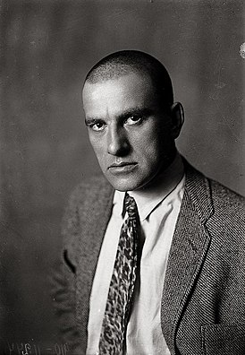

Влади́мир Влади́мирович Маяко́вский (7 [19] июля 1893, Багдади, Кутаисская губерния,
Российская империя[3] — 14 апреля 1930, Москва, СССР) — русский и советский поэт, драматург,
киносценарист, кинорежиссёр, киноактёр, художник. Лауреат премии Ленинского комсомола (1968 —
посмертно). Один из наиболее значимых русских поэтов XX века[6], классик советской литературы[7].
Редактор журналов «ЛЕФ» («Левый фронт») и «Новый ЛЕФ».